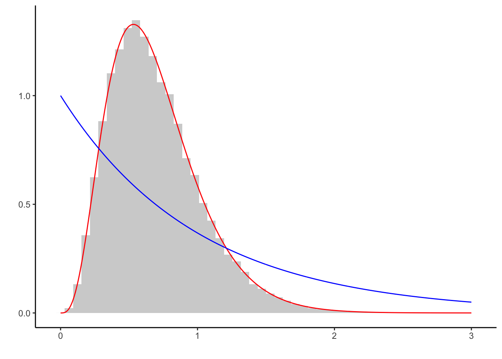

This document provides a gentle introduction to implementing Metropolis-Hastings algorithms. It is intended to give a basic understanding on fundamental principles. The theoretical derivation, involved examples and applications can be found in Robert & Casella (2004): Monte Carlo Statistical Methods.
We aim to obtain a sample from \(f\) without directly drawing from it. The Metropolis-Hastings algorithm generates such a sample by drawing from the proposal density \(g\) instead. The generated sample will be accepted with probability . The proposal density can be chosen freely and its best if it is easy to simulate from \(g\). The algorithm is given by:
f <- function(x) ... #target density
q <- function(y,x) ... #proposal density, easy to sample from
rho <- function(x, y) f(y) / f(x) * q(y,x) / q(y,x) #acceptance probability
n <- 1e5 #length of chain
X <- c(1) #initial value of Markov chain
for (i in 1:n) {
Y <- ... #draw from g( . , X[i])
if(runif(1) < rho(X[i], Y)) X[i+1] <- Y #accept with rho
else X[i+1] <- X[i] #reject with 1-rho
}We start by simulating from \(Gamma(4.3, 6.2)\), using a \(Gamma(5, 6)\) proposal. As the proposal does not depend on the current state of the Markov chain, this version of the algorithm is coined independent Metropolis-Hastings.
alpha0 <- 4.3 #shape
beta0 <- 6.2 #rate
alpha <- 5 #proposal shape
beta <- 6 #proposal rate
f <- function(x) dgamma(x, alpha0, beta0) #target density
q <- function(x) dgamma(x, alpha, beta) #proposal density
rho <- function(x, y) f(y) / f(x) * q(x) / q(y) #acceptance probability
n <- 1e5 #length of chain
Y <- rgamma(n, alpha, beta) #draw from proposal
X <- c(1) #initial value of Markov chain
for (i in 1:n) {
if (runif(1) < rho(X[i], Y[i])) X[i + 1] <- Y[i] #accept with rho
else X[i + 1] <- X[i] #reject with 1-rho
}
# show empirical and theoretical means
data.frame(empirical = mean(X), theoretical = alpha0/beta0)## empirical theoretical
## 1 0.6959572 0.6935484# visualize
require('ggplot2')
x <- seq(0, 3, l = 1e3)
ggplot() + theme_classic() + labs(y = '', x = '') +
geom_histogram(aes(x = X, y = ..density..), bins = 50, alpha = 0.3) +
geom_line(aes(x, f(x)), col = 'red') +
geom_line(aes(x, q(x)), col = 'blue')Light gray is the histogram of the generated sample, red the underlying target density, and blue the proposal density. The sample captures the characteristics of \(f\) well.
However, nothing less can be expected when using a proposal that is so closely related to the target density. It does not make too much sense to use a Gamma proposal to generate a sample from the Gamma distribution, so lets proceed with another proposal.
We now consider the density of \(Exp(1)\) as proposal. We replace:
q <- function(x) dexp(x, 1) # proposal density
Y <- rexp(n, 1) # draw from proposal Also, we highlight the independence of the initial value of the Markov chain by setting
X <- c(234) # absurd initial valueRunning the code gives:
## empirical theoretical
## 1 0.6977731 0.6935484
Although both the initial value lies at the tail of the target density \(f\) (red) and the proposal \(g\) (blue) differs from \(f\), the generated sample captures the characteristics of the target well.
Naturally, using the \(Exp(1)\) as proposal leads to much more generated samples being rejected than before. The shape of the proposal is crucial in the efficiency of the algorithm.
Now consider the case where the proposal density \(g\) does not have enough mass where the target density does \(f\). We replace
q <- function(x) dexp(x, 10) # proposal density
Y <- rexp(n, 10) # draw from proposal This gives:
## empirical theoretical
## 1 0.6538496 0.6935484The proposal \(Exp(10)\)-density \(g\) (blue) exhibits very little mass in regions where the target density \(f\) (red) does. Very few samples can be generated in those regions. Although the left tail of \(f\) is well approximated, the right tail is not. While enough samples are produced asymptotically, the Markov chain converges prohibitively slow.
We now turn to generating samples from a posterior. Consider the hierarchical model \[\begin{align*} X|\lambda &\sim Poi(\lambda)\\ \theta &\sim Gamma(\alpha, \beta); \end{align*}\] from which we can obtain the posterior as \[\begin{equation*} \theta|X=x \sim Gamma\left(\alpha + \sum_{i=1}^n x_i, 1 + \beta\right). \end{equation*}\]
Using the prior as proposal, the acceptance probability is given as \[\begin{equation*} \rho(\theta,\vartheta) = \min\left\{ 1, \frac{\pi(\vartheta|x)\pi(\theta)}{\pi(\theta|x)\pi(\vartheta)} \right\} = \min\left\{ 1, \frac{f(x|\vartheta)}{f(x|\theta)} \right\}. \end{equation*}\]
Thus:
set.seed(123)
alpha0 <- 5.3 #shape
beta0 <- 8.2 #rate
m <- 3 # sample size (if m large, the proposal is bad!)
sample <- rpois(m, rgamma(1, alpha0, beta0)) #draw sample
rho <- function(x, y) dpois(sum(sample), y) / dpois(sum(sample), x) # acc prob
n <- 1e4 #length of chain
Y <- rgamma(n, alpha0, beta0) #draw from prior
X <- c(1) #initial value of Markov chain
for (i in 1:n) {
if ( runif(1) < rho(X[i],Y[i] )) X[i + 1] <- Y[i] #accept with rho
else X[i + 1] <- X[i] #reject with 1-rho
}
# sampling with knowledge of the posterior
f <- function(x) dgamma(x, alpha0 + sum(sample), beta0 + 1) #posterior
q <- function(x) dgamma(x, alpha0, beta0) #prior
# visualize
require('ggplot2')
x <- seq(0, 3, l = 1e3)
ggplot() + theme_classic() + labs(y = '', x = '') + ylim(c(0,1.5)) +
geom_histogram(aes(x = X, y = ..density..), bins = 50, alpha = 0.3) +
geom_line(aes(x, f(x)), col = 'red') +
geom_line(aes(x, q(x)), col = 'blue')As in the example above, the right tail of the proposal does not have enough mass to estimate the right tail of \(f\) well enough. This can be mitigated by choosing a more suitable proposal. In fact, there is no reason to believe that the prior serves as a good proposal, apart from mathematical simplicity.
In our case, if the sample size m is large, the prior serves as a bad proposal. Instead, other proposals should be considered.
If the proposal is generated by \(Y \sim q(|y-x|)\), the algorithm is referred to as Random Walk Metropolis Hastings. We generate from a standard normal density using \(Y \sim X + \mathcal{U}([-\delta, \delta])\), for three step sizes delta <- c(0.1, 1, 100).
set.seed(123)
delta <- c(0.1, 1, 100) #use three different step sizes for the random walk
rho <- function(x, y) exp((x ** 2 - y ** 2) / 2) #acceptance probability
n <- 1e4 #length of chain
X1 <- X2 <- X3 <- c(0) #starting values
for (i in 1:n) {
#generate proposal
Y1 <- X1[i] + runif(1,-delta[1], delta[1])
Y2 <- X2[i] + runif(1,-delta[2], delta[2])
Y3 <- X3[i] + runif(1,-delta[3], delta[3])
#generate next state of Markov chain
if (runif(1) < rho(X1[i], Y1)) X1[i + 1] <- Y1 #accept with rho
else X1[i + 1] <- X1[i] #reject with 1-rho
if (runif(1) < rho(X2[i], Y2)) X2[i + 1] <- Y2 #accept with rho
else X2[i + 1] <- X2[i] #reject with 1-rho
if (runif(1) < rho(X3[i], Y3)) X3[i + 1] <- Y3 #accept with rho
else X3[i + 1] <- X3[i] #reject with 1-rho
}
#plot results
require('reshape')
require('ggplot2')
df <- melt(data.frame(X1, X2, X3))
ggplot(df) + theme_classic() +
labs(y = '', x = '') +
geom_histogram(aes(x = value, y = ..density..), bins = 30, alpha = 0.3) +
stat_function( fun = dnorm, color = 'red') +
facet_wrap(~variable, labeller = as_labeller(c(X1 = 'g(x) = x + U[-0.1, 0.1]',
X2 = 'g(x) = x + U[-1, 1]',
X3 = 'g(x) = x + U[-100, 100]'))
)The histogram of the generated sample is given in light gray, the target density of the standard normal distribution in red. If the step size is too small to explore the support of \(f\) at reasonable speed, the corresponding Markov chain converges slowly (left).
If the step size is too large, many proposals will be rejected and the chain stays too at the same value (right). If the step size is adequate for the target density however, \(f\) can be approximated well. Of course, the right choice of delta requires knowledge of \(f\), which might not be available.
In conclusion, the Metropolis Hastings algorithm can be applied on virtually any density \(f\). However, in order to ensure reasonable convergence speed knowledge about \(f\) is required so that a suitable proposal \(g\) can be chosen.